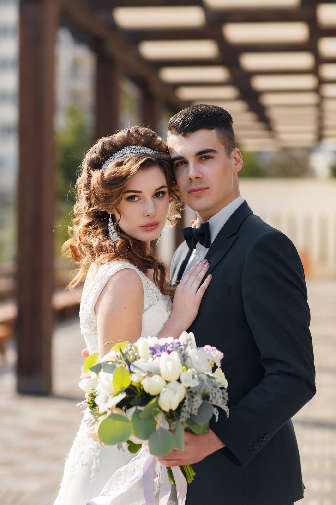
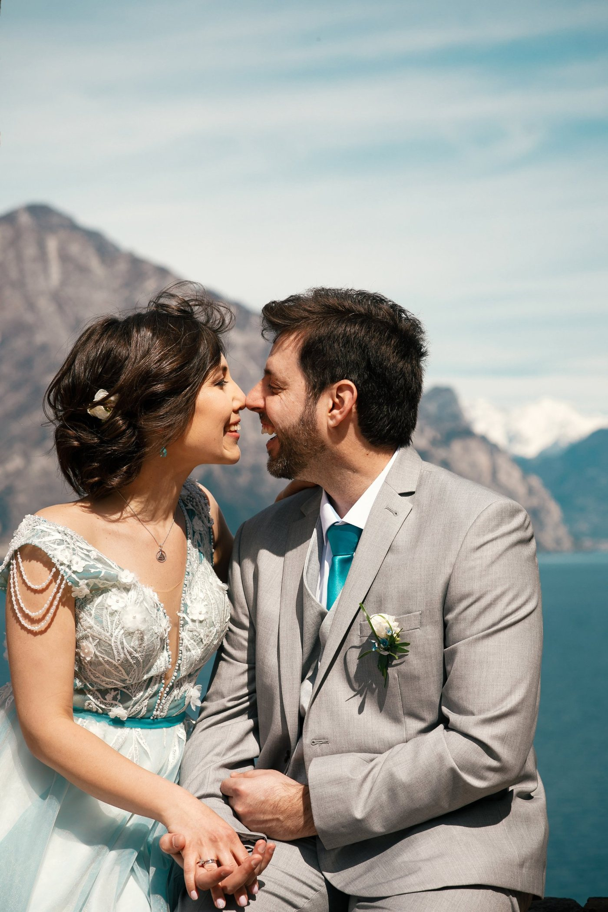
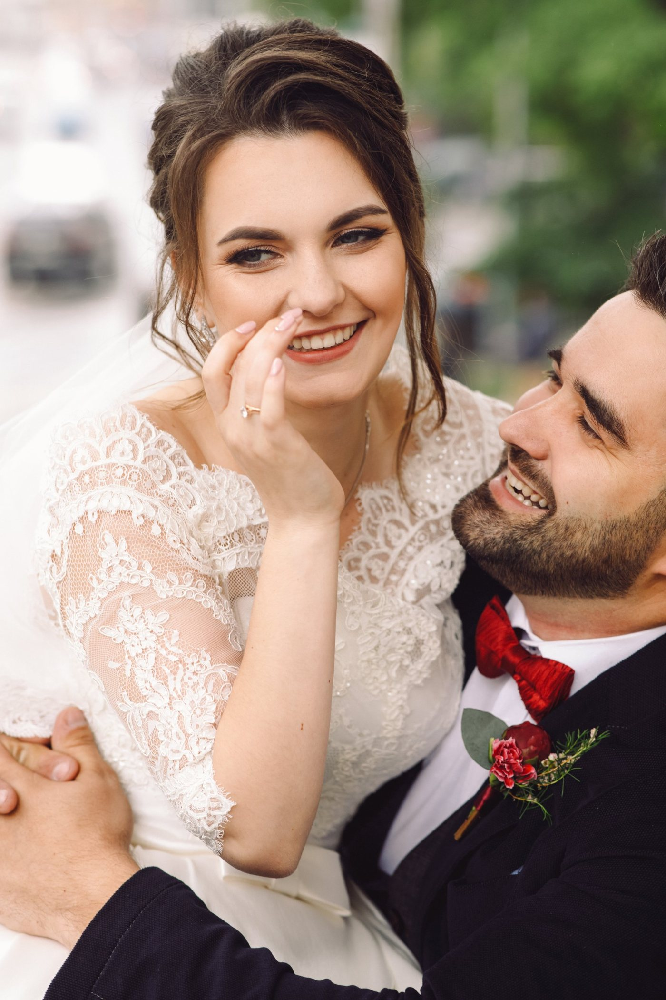
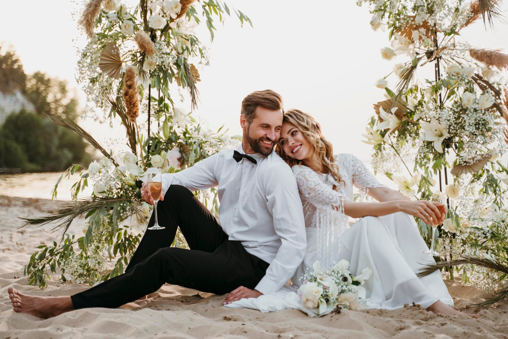
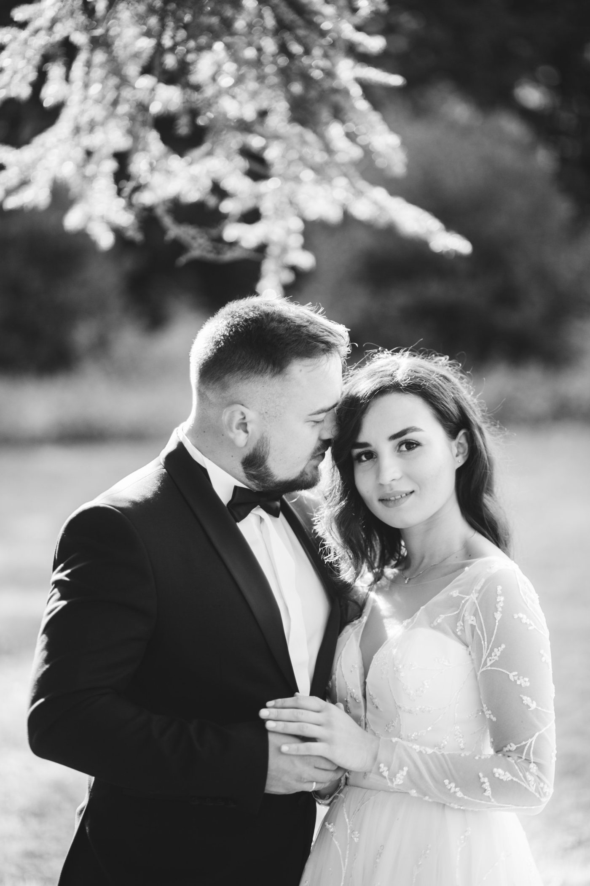
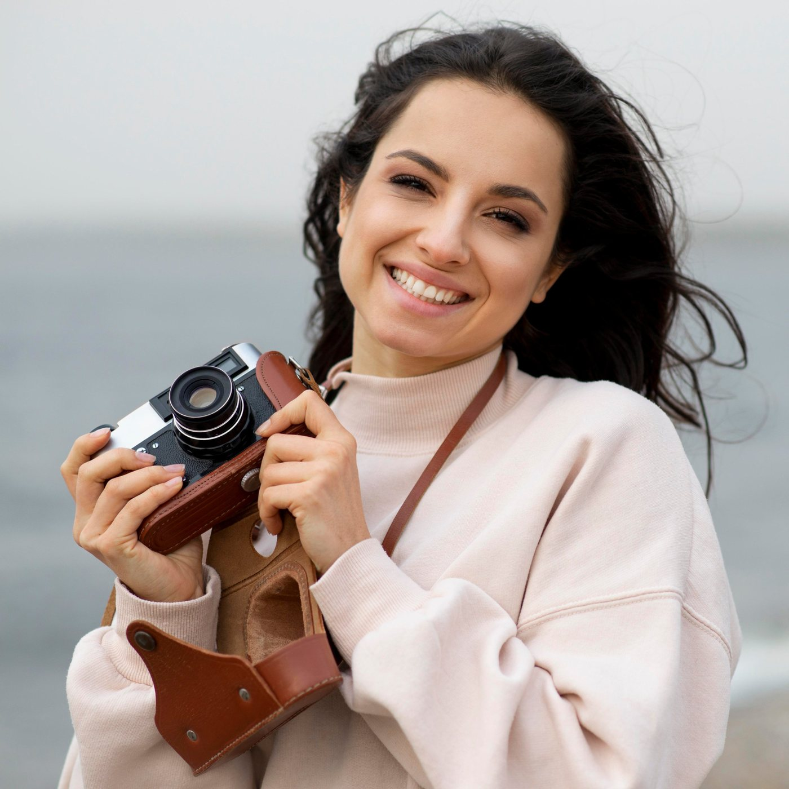

Serena Lee
Hold on to the way it felt.
Wedding and portrait photography, made from real feeling and unhurried light.
Let's talkSelected work
Weddings and portraits, the quiet in-between moments included.







Hello, I'm Serena.
I photograph weddings and portraits because I love the in-between moments: the breath before the aisle, a hand finding another hand, the laugh nobody planned.
I work quietly and stay close, so you can forget the camera and simply be there. What you receive are photographs that feel the way your day did: honest, warm, and made to be held onto.
Serena
Let's tell your story.
Tell me about your day, your date, and what matters most to you. I'd love to hear it.
hello@serenalee.com